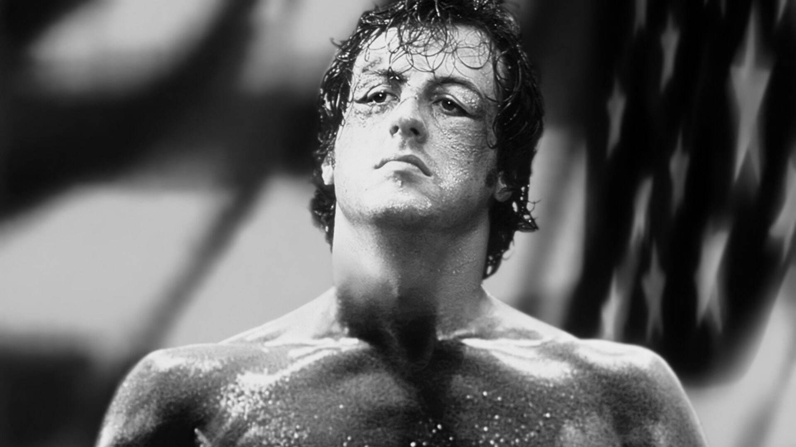
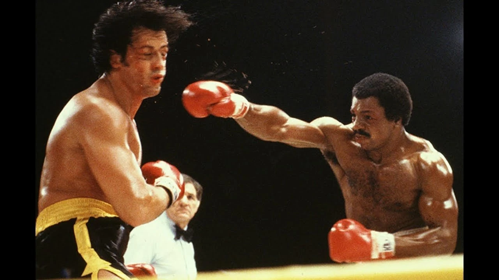
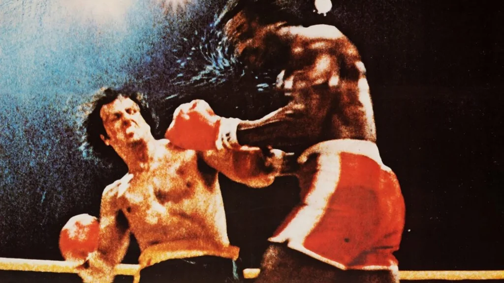
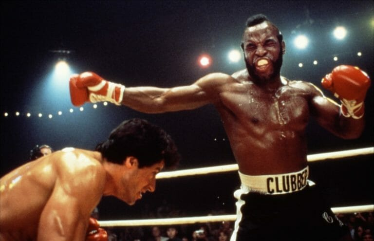
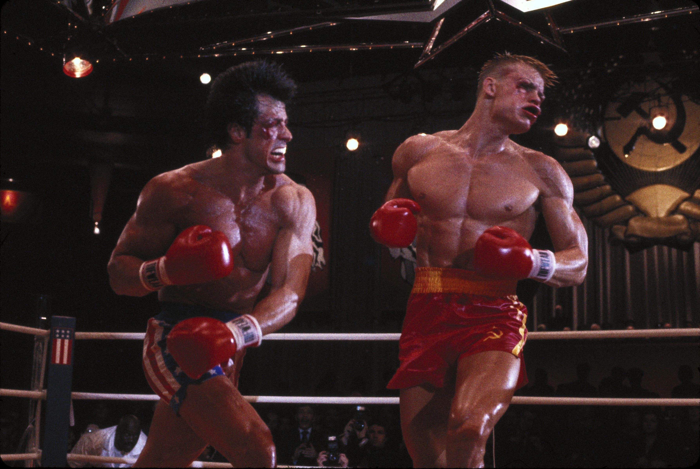
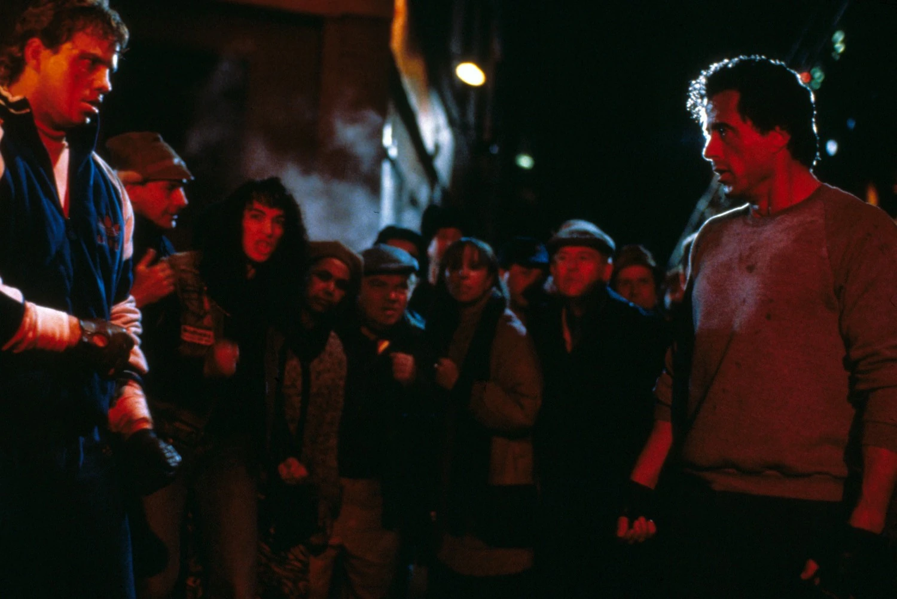
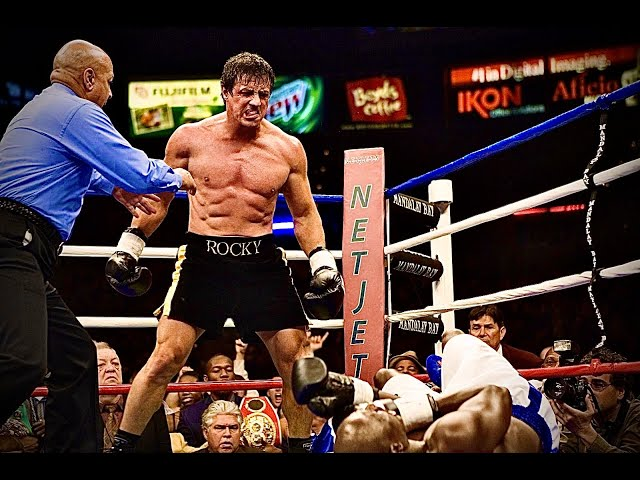

Rocky balboa

Sinopse
A franquia de filmes de que retrata a vida do personagem ROCKY-BALBOA, acompanha a ascensão e os desafios de um boxeador determinado. Desde sua luta inicial contra Apollo Creed até enfrentamentos épicos contra adversários como Clubber Lang e Ivan Drago, Rocky supera obstáculos dentro e fora do ringue. Aposentado, ele continua ligado ao esporte ao treinar novos talentos, como Adonis Creed. A saga é marcada por resiliência, emoção e momentos icônicos do boxe. 🥊🎬
Resumo do Roteiro dos Filmes
1. Rocky: Um Lutador (1976)
Rocky Balboa é um boxeador amador e cobrador de dívidas da Filadélfia que tem sua grande chance quando o campeão mundial dos pesos-pesados, Apollo Creed, decide dar uma oportunidade a um desconhecido. Rocky treina duro, supera desafios pessoais e emociona o mundo ao resistir os 15 rounds contra o campeão, mesmo perdendo por pontos. O filme destaca a luta do "homem comum" em busca de dignidade e reconhecimento.

2. Rocky II: A Revanche (1979)
Após a luta épica, Apollo sente que não venceu com justiça e desafia Rocky para uma revanche. Rocky, inicialmente relutante, aceita o desafio diante de dificuldades financeiras. Com apoio da esposa Adrian e do treinador Mickey, ele treina intensamente. No final, Rocky vence Apollo por nocaute e se torna o novo campeão mundial.

3. Rocky III: O Desafio Supremo (1982)
Agora um campeão famoso, Rocky perde o foco e é derrotado por Clubber Lang, um desafiante agressivo. Após a morte de Mickey, Rocky recebe ajuda inesperada de Apollo, que o treina para recuperar o título. Rocky aprende novas técnicas e reconquista o cinturão, mostrando superação e evolução pessoal.

4. Rocky IV (1985)
Durante a guerra fria, o amigo de Rocky, Apollo Creed,é morto em uma luta contra o soviético Ivan Drago, um boxeador poderoso e impiedoso. Rocky decide enfretá-lo em uma luta na união soviética. Ele treina em á neve, enquanto Drago usa alta tecnologia. Rocky vence e faz um discurso pela paz e união entre os povos.

5. Rocky V (1990)
Após a luta contra Drago, Rocky sofre danos cerebrais e se aposenta. Ele perde sua fortuna e volta ao bairro humilde da Filadélfia. Treina um jovem promissor, Tommy Gunn, que depois o trai em busca de fama. No final, Rocky enfrenta Tommy em uma luta de rua, mostrando que ainda tem espírito de lutador. O filme foca mais em drama e relações humanas.

6. Rocky Balboa (2006)
Já mais velho e viúvo (Adrian faleceu), Rocky vive uma vida simples e administra um restaurante. Um programa de TV simula uma luta entre ele e o atual campeão, Mason "The Line" Dixon, gerando curiosidade do público. Rocky decide voltar para uma última luta oficial. Apesar da idade, ele resiste bravamente os rounds e perde apenas por decisão dividida, saindo com o respeito do público e encerrando sua carreira com dignidade.

Elenco
Silvestre Stallone: Rocky

Sylvester Gardenzio Stallone é um ator, roteirista e diretor norte-americano, conhecido por seus papéis em filmes de ação de Hollywood. Dois de seus notáveis personagens são o boxeador Rocky Balboa e o soldado John Rambo.
Burt Young: Paulie

Burt Young foi um ator norte-americano. Ele é mais conhecido por ter feito o papel de Paulie na franquia de filmes Rocky.
Talia shire: Adrian

Talia Shire é uma atriz americana de ascendência italiana. Nascida Talia Rose Coppola em Lake Success, Nova York; ela é irmã do diretor e produtor Francis Ford Coppola e sobrinha do compositor Anton Coppola
Carl Weathers: Apollo

Carl Weathers foi um ator e jogador de futebol americano norte-americano. Como ator, ficou famoso ao interpretar o boxeador Apollo Creed na série de filmes Rocky.
Burgess Meredith: Mickey

Oliver Burgess Meredith foi um ator norte-americano. Participou de alguns episódios da famosa série Twilight Zone, mais conhecida como "Além da Imaginação", de Rod Serling. Ficou conhecido nos anos 60, quando interpretou o vilão Pinguim, da série Batman.